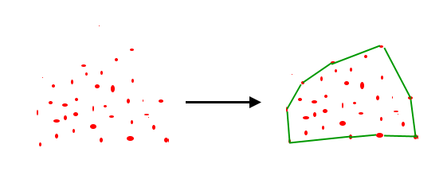
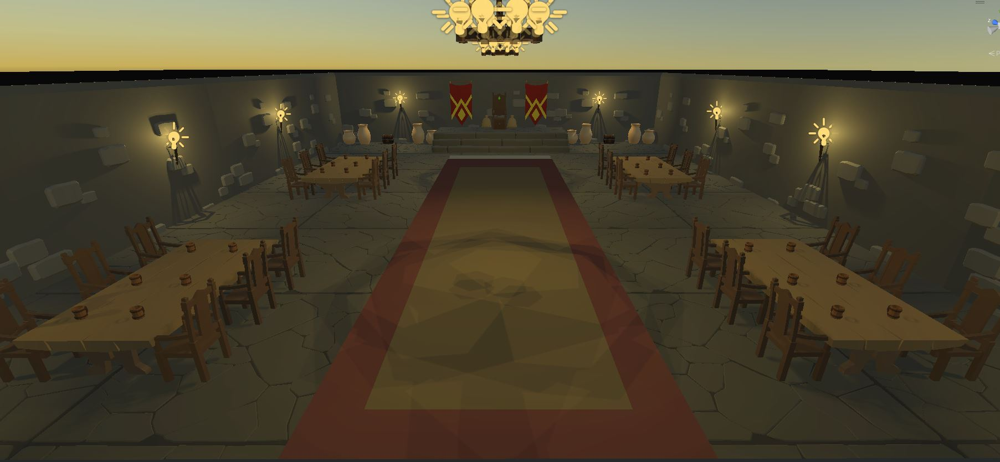
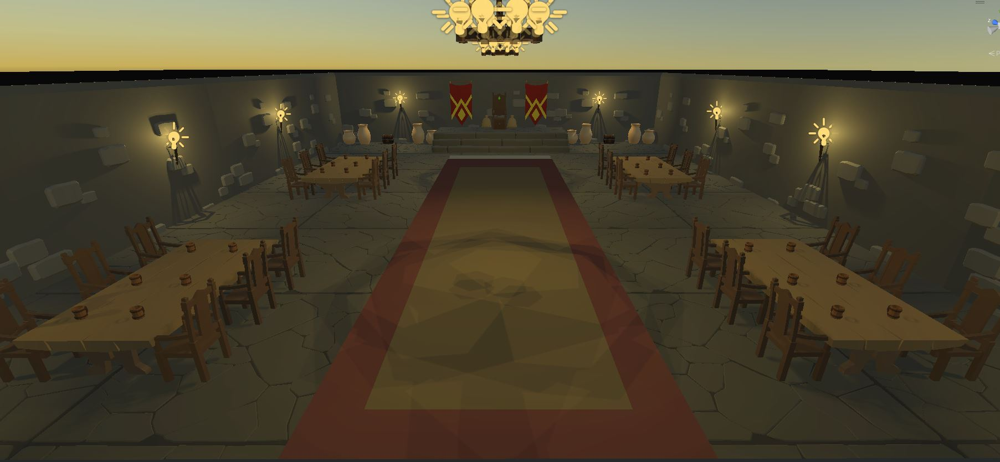

Projects
Ray Tracing - Proof of Concept
Vulkan Ray Tracing

Blender Campfire Scene Render
Action Adventure Game Prototype
DrawDojo - Creative Social Media Platform

This is an action-adventure game prototype that draws inspiration from popular titles in the genre,
such as Diablo and Path of Exile. The game features fierce enemies, powerful loot, and customizable
character armor rigging and spells. The loot system is tiered, and levels are carefully designed
with destructible objects to add realism to the gameplay. The player controller uses a hierarchical
state machine with various sub-states, while the user interface features health and mana globes, a
hotbar for selecting skills, and an inventory system for managing items. This prototype also
includes a medieval fantasy-themed outdoor environment with a castle, dungeon, and merchant NPC for
trading items.
This was built as a one time group project and will not be continuing development, although
derivative projects may be built in the future.
Link to Project
 

This is a mini-project, mostly just to gain experience in javascript, and test p5.js. It generates a
group of points on a canvas, and generates the convex hull around those points. The user can add or
remove to the total number of points using a slider.
A convex hull is the smallest convex polygon that completely encloses a set of points. In other
words, if you imagine laying a piece of string around a group of points and then pulling it tight,
the resulting shape would be the convex hull.
The Graham scan algorithm, which is used in this project, is a popular algorithm for finding the
convex hull of a set of points in
2D space. It works by first finding the point with the lowest y-coordinate (or the leftmost point in
case of a tie), which must be a vertex of the convex hull. Then, it sorts all the remaining points
by their polar angle with respect to this anchor point, and removes any that would create a concave
angle if added to the hull. This is repeated until all the points have been added to the hull.
Link to Project